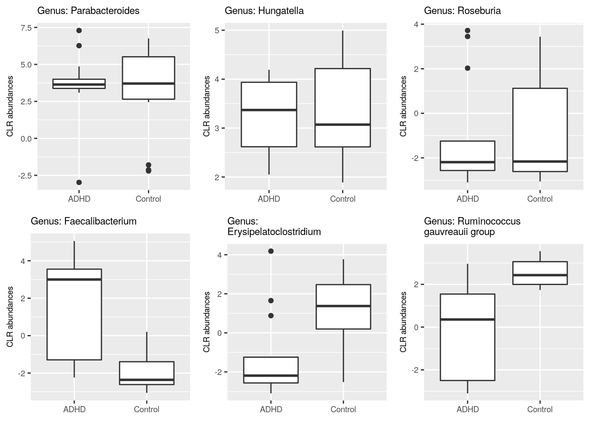

Chapter 9 Differential abundance analysis
Here, we analyse abundances with two different methods: Wilcoxon test (CLR), and ANCOM-BC. All of these test statistical differences between groups. We will analyse Genus level abundances.
We might want to first perform prevalence filtering to reduce the amount of multiple tests. In this particular dataset, all genera pass a prevalence threshold of 10%, therefore, we do not perform filtering.
9.1 Wilcoxon test
A Wilcoxon test estimates the difference in an outcome between two groups. It is a non-parametric alternative to a t-test, which means that the Wilcoxon test does not make any assumptions about the data.
Let’s first combine the data for the testing purpose.
# Agglomerates data to Genus level
tse_genus <- agglomerateByRank(tse, rank = "Genus")
# Perform clr transformation. A Pseudocount of 1 needs to be added,
# because the data contains zeros and the clr transformation includes a
# log transformation.
tse_genus <- transformCounts(tse_genus, method = "clr", pseudocount = 1)
# Does transpose, so samples are in rows, then creates a data frame.
abundance_analysis_data <- data.frame(t(assay(tse_genus, "clr")))
# We will analyse whether abundances differ depending on the"patient_status".
# There are two groups: "ADHD" and "control".
# Let's include that to the data frame.
abundance_analysis_data <- cbind(
abundance_analysis_data,
patient_status = colData(tse_genus)$patient_status
)Now we can start with the Wilcoxon test. We test all the taxa by looping through columns, and store individual p-values to a vector. Then we create a data frame from collected data.
The code below does the Wilcoxon test only for columns that contain abundances, not for columns that contain patient status.
genera <- names(abundance_analysis_data[, !names(abundance_analysis_data) %in% "patient_status"])
wilcoxon_p <- c() # Initialize empty vector for p-values
# Do "for loop" over selected column names
for (i in genera) {
result <- wilcox.test(abundance_analysis_data[, i] ~ patient_status,
data = abundance_analysis_data)
# Stores p-value to the vector with this column name
wilcoxon_p[[i]] <- result$p.value
}
wilcoxon_p <- data.frame(taxa = names(wilcoxon_p),
p_raw = unlist(wilcoxon_p))Multiple tests were performed. These are not independent, so we need to adjust p-values for multiple testing. Otherwise, we would increase the chance of a type I error drastically depending on our p-value threshold. By applying a p-value adjustment, we can keep the false positive rate at a level that is acceptable. What is acceptable depends on our research goals. Here we use the fdr method, but there are several other methods as well.
wilcoxon_p$p_adjusted <- p.adjust(wilcoxon_p$p_raw, method = "fdr")# prepare a dataframe to plot p values
df <- data.frame(x = c(wilcoxon_p$p_raw, wilcoxon_p$p_adjusted),
type=rep(c("raw", "fdr"),
c(length(wilcoxon_p$p_raw),
length(wilcoxon_p$p_adjusted))))
# make a histrogram of p values and adjusted p values
wilcoxon_plot <- ggplot(df) +
geom_histogram(aes(x=x, fill=type)) +
labs(x = "p-value", y = "Frequency")
wilcoxon_plot## `stat_bin()` using `bins = 30`. Pick better value with `binwidth`.
9.2 ANCOM-BC
The analysis of composition of microbiomes with bias correction (ANCOM-BC) is a recently developed method for differential abundance testing. It is based on an earlier published approach. The former version of this method could be recommended as part of several approaches: A recent study compared several mainstream methods and found that among another method, ANCOM produced the most consistent results and is probably a conservative approach. Please note that based on this and other comparisons, no single method can be recommended across all datasets. Rather, it could be recommended to apply several methods and look at the overlap/differences.
As the only method, ANCOM-BC incorporates the so called sampling fraction into the model. The latter term could be empirically estimated by the ratio of the library size to the microbial load. Variations in this sampling fraction would bias differential abundance analyses if ignored. Furthermore, this method provides p-values, and confidence intervals for each taxon. It also controls the FDR and it is computationally simple to implement.
As we will see below, to obtain results, all that is needed is to pass
a phyloseq object to the ancombc() function. Therefore, below we first convert
our tse object to a phyloseq object. Then, we specify the formula. In this formula, other covariates could potentially be included to adjust for confounding.
Please check the function documentation
to learn about the additional arguments that we specify below. Also, see here for another example for more than 1 group comparison.
# currently, ancombc requires the phyloseq format, but we can convert this easily
pseq <- makePhyloseqFromTreeSummarizedExperiment(tse)
pseq_genus <- phyloseq::tax_glom(pseq, taxrank = "Genus")
out = ancombc(
phyloseq = pseq_genus,
formula = "patient_status",
p_adj_method = "fdr",
zero_cut = 0.90, # by default prevalence filter of 10% is applied
lib_cut = 0,
group = "patient_status",
struc_zero = TRUE,
neg_lb = TRUE,
tol = 1e-5,
max_iter = 100,
conserve = TRUE,
alpha = 0.05,
global = TRUE
)
res <- out$resThe object out contains all relevant information. Again, see the
documentation of the function
under Value for an explanation of all the output objects. Our question can be answered
by looking at the res object, which now contains dataframes with the coefficients,
standard errors, p-values and q-values. Conveniently, there is a dataframe diff_abn.
Here, we can find all differentially abundant taxa. Below we show the first 6 entries of this dataframe:
knitr::kable(head(res$diff_abn)) %>% kableExtra::kable_styling("striped") %>%
kableExtra::scroll_box(width = "100%")| patient_statusControl | |
|---|---|
| 172647198 | FALSE |
| 1726478 | FALSE |
| 172647201 | FALSE |
| 17264798 | FALSE |
| 172647195 | FALSE |
| 1726472 | FALSE |
In total, this method detects 14 differentially abundant taxa.
print(paste0("Wilcoxon test p-values under 0.05: ", sum(wilcoxon_p$p_adjusted<0.05, na.rm = TRUE), "/", length(wilcoxon_p$p_adjusted)))## [1] "Wilcoxon test p-values under 0.05: 2/54"print(paste0("ANCOM p-values under 0.05: ", sum(out$res$diff_abn$patient_statusControl), "/", length(out$res$diff_abn$patient_statusControl)))## [1] "ANCOM p-values under 0.05: 14/49"9.3 Comparison of the methods
TO DO: More difference abundance methods are upcoming. Comparison will be made later.
9.4 Comparison of abundance
In previous steps, we got information which taxa vary between ADHD and control groups. Let’s plot those taxa in the boxplot, and compare visually if abundances of those taxa differ in ADHD and control samples. For comparison, let’s plot also taxa that do not differ between ADHD and control groups.
Let’s first gather data about taxa that have highest p-values.
#we used the results from the wilcoxn test
df <- wilcoxon_p
# renaming row names and taxa column
df$taxa <- rownames(assay(tse_genus,"clr"))
# There are some taxa that do not include Genus level information. They are
# excluded from analysis.
# str_detect finds if the pattern is present in values of "taxon" column.
# Subset is taken, only those rows are included that do not include the pattern.
df <- df[ !stringr::str_detect(df$taxa, "Genus:uncultured"), ]
# Sorts p-values in decreasing order. Takes 3 first ones. Takes those rows that match
# with p-values. Takes taxa.
highest3 <- df[df$p_adjusted %in% sort(df$p_adjusted, decreasing = TRUE)[1:3], ]$taxa
# From clr transformed table, takes only those taxa that had highest p-values
highest3 <- assay(tse_genus, "clr")[highest3, ]
# Transposes the table
highest3 <- t(highest3)
# Adds colData that includes patient status infomation
highest3 <- data.frame(highest3, as.data.frame(colData(tse_genus)))
# Some taxa names are that long that they don't fit nicely into title. So let's add there
# a line break after e.g. "Genus". Here the dot after e.g. Genus is replaced with
# ": \n"
colnames(highest3)[1:3] <- lapply(colnames(highest3)[1:3], function(x){
# Replaces the first dot
temp <- stringr::str_replace(x, "[.]", ": ")
# Replace all other dots and underscores with space
temp <- stringr::str_replace_all(temp, c("[.]" = " ", "_" = " "))
# Adds line break so that 25 characters is the maximal width
temp <- stringr::str_wrap(temp, width = 25)
})Next, let’s do the same but for taxa with lowest p-values.
# Sorts p-values in increasing order. Takes 3rd first ones. Takes those rows that match
# with p-values. Takes taxa.
lowest3 <- df[df$p_adjusted %in% sort(df$p_adjusted, decreasing = FALSE)[1:3], ]$taxa
# From clr transformed table, takes only those taxa that had lowest p-values
lowest3 <-assay(tse_genus, "clr")[lowest3, ]
# Transposes the table
lowest3 <- t(lowest3)
# Adds colData that includes patient status infomation
lowest3 <- data.frame(lowest3, as.data.frame(colData(tse_genus)))
# Some taxa names are that long that they don't fit nicely into title. So let's add there
# a line break after e.g. "Genus". Here the dot after e.g. Genus is replaced with
# ": \n"
colnames(lowest3)[1:3] <- lapply(colnames(lowest3)[1:3], function(x){
# Replaces the first dot
temp <- stringr::str_replace(x, "[.]", ": ")
# Replace all other dots and underscores with space
temp <- stringr::str_replace_all(temp, c("[.]" = " ", "_" = " "))
# Adds line break so that 25 characters is the maximal width
temp <- stringr::str_wrap(temp, width = 25)
})Then we can plot these six different taxa. Let’s arrange them into the same picture.
# Puts plots in the same picture
gridExtra::grid.arrange(
# Plot 1
ggplot(highest3, aes(x = patient_status, y = highest3[,1])) +
geom_boxplot() +
ylab("CLR abundances") + # y axis title
ggtitle(names(highest3)[1]) + # main title
theme(title = element_text(size = 7),
axis.text = element_text(size = 7),
axis.title.x=element_blank()), # makes titles smaller, removes x axis title
# Plot 2
ggplot(highest3, aes(x = patient_status, y = highest3[,2])) +
geom_boxplot() +
ylab("CLR abundances") + # y axis title
ggtitle(names(highest3)[2]) + # main title
theme(title = element_text(size = 7),
axis.text = element_text(size = 7),
axis.title.x=element_blank()), # makes titles smaller, removes x axis title
# Plot 3
ggplot(highest3, aes(x = patient_status, y = highest3[,3])) +
geom_boxplot() +
ylab("CLR abundances") + # y axis title
ggtitle(names(highest3)[3]) + # main title
theme(title = element_text(size = 7),
axis.text = element_text(size = 7),
axis.title.x=element_blank()), # makes titles smaller, removes x axis title
# Plot 4
ggplot(lowest3, aes(x = patient_status, y = lowest3[,1])) +
geom_boxplot() +
ylab("CLR abundances") + # y axis title
ggtitle(names(lowest3)[1]) + # main title
theme(title = element_text(size = 7),
axis.text = element_text(size = 7),
axis.title.x=element_blank()), # makes titles smaller, removes x axis title
# Plot 5
ggplot(lowest3, aes(x = patient_status, y = lowest3[,2])) +
geom_boxplot() +
ylab("CLR abundances") + # y axis title
ggtitle(names(lowest3)[2]) + # main title
theme(title = element_text(size = 7),
axis.text = element_text(size = 7),
axis.title.x=element_blank()), # makes titles smaller, removes x axis title
# Plot 6
ggplot(lowest3, aes(x = patient_status, y = lowest3[,3])) +
geom_boxplot() +
ylab("CLR abundances") + # y axis title
ggtitle(names(lowest3)[3]) + # main title
theme(title = element_text(size = 7),
axis.text = element_text(size = 7),
axis.title.x=element_blank()), # makes titles smaller, removes x axis title
# 3 columns and 2 rows
ncol = 3,
nrow = 2
)
We plotted those taxa that have the highest and lowest p values according to DESeq2. Can you create a plot that shows the difference in abundance in "[Ruminococcus]_gauvreauii_group", which is the other taxon that was identified by all tools. Try for yourself! Below you find one way how to do it.
select(
abundance_analysis_data,
patient_status,
Ruminococcus_gauvreauii_group = contains("gauvreauii_group")) %>%
ggplot(aes(patient_status, Ruminococcus_gauvreauii_group)) +
geom_boxplot()